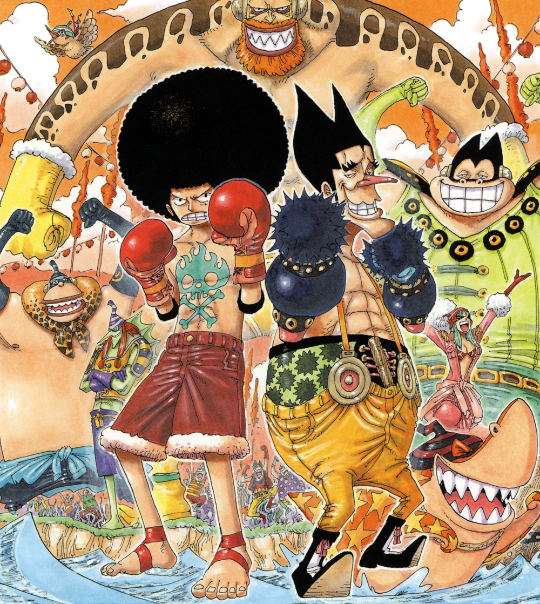
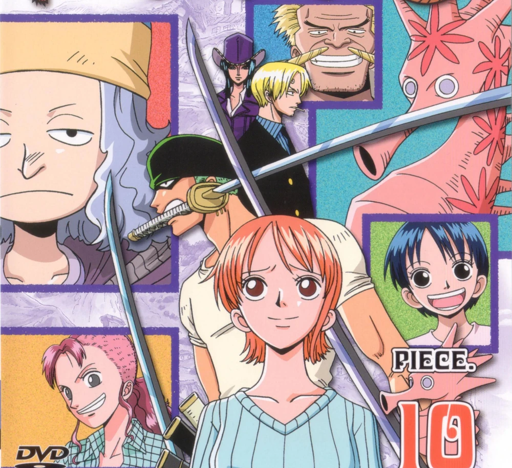
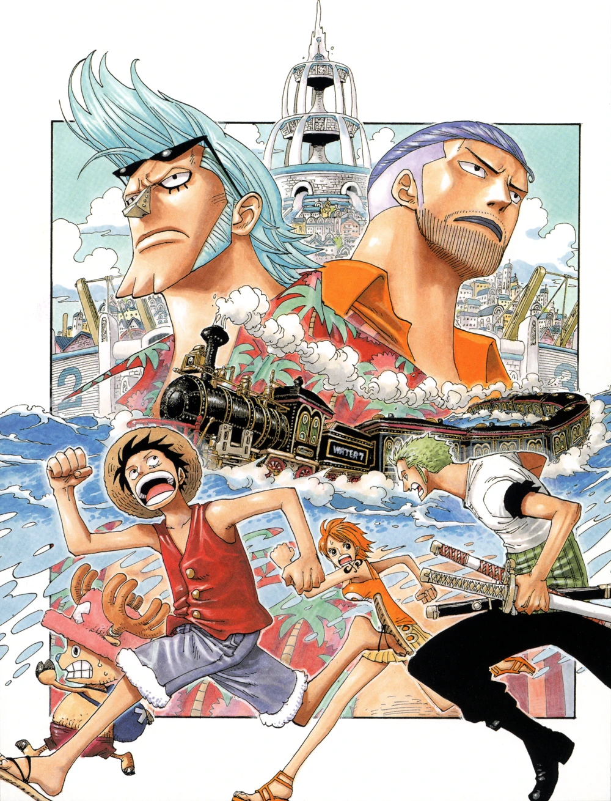
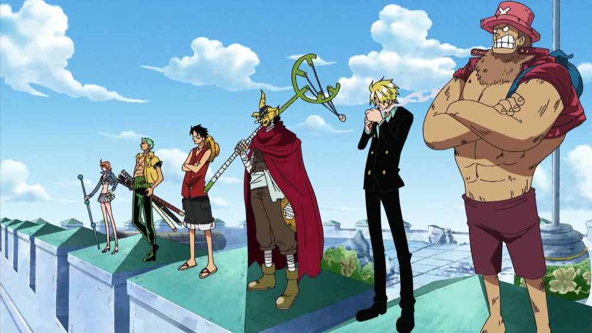

Water 7 Saga dimulai dengan Long Ring Long Land Arc, yang
diwarnai dengan komedi saat kru bertarung melawan Foxy dalam permainan Davy Back Fight. Di
Water 7 Arc, kru tiba di kota air Water 7 dan mengetahui bahwa kapal
mereka, Going Merry, tidak bisa diperbaiki lagi. Ketegangan meningkat saat Robin diculik
oleh CP9, dan kru harus menyerbu Enies Lobby dalam Enies Lobby Arc
untuk menyelamatkannya. Pertarungan puncak antara Luffy dan Rob Lucci terjadi di sini, dan
kru meninggalkan Water 7 dengan kapal baru mereka, Thousand Sunny, di Post-Enies Lobby Arc.
Episode: 207-325
Long Ring Long Land Arc

Kru Topi Jerami tiba di Long Ring Long Land dan bertemu dengan Foxy, bajak laut yang
menantang mereka dalam Davy Back Fight, serangkaian permainan untuk menentukan nasib
anggota kru. Arc ini lebih ringan dan penuh humor, menonjolkan interaksi lucu antar
karakter. Akhirnya, Luffy dan kru berhasil mengalahkan Foxy dan melanjutkan
perjalanan mereka.
Episode: 207-219
Ocean's Dream Arc

Dalam arc filler ini, kru kehilangan ingatan mereka akibat serangan makhluk
misterius. Mereka berusaha memulihkan ingatan sambil menghadapi berbagai tantangan
yang muncul dari ketidakpastian identitas mereka. Arc ini menambahkan elemen misteri
dan petualangan dalam kisah mereka.
Episode: 220-224
Filler Arc
Foxy's Return Arc
Dalam arc ini, Foxy kembali menantang Luffy dan kru dalam Davy Back Fight yang baru.
Kali ini, mereka harus menghadapi berbagai permainan yang menguji kekuatan dan
kecerdikan mereka. Arc ini menonjolkan momen lucu dan interaksi antara karakter,
sambil menunjukkan dinamika persahabatan yang terus berkembang di antara Kru Topi
Jerami.
Episode: 225-228
Filler Arc
Water 7 Arc

Kru tiba di Water 7 untuk memperbaiki kapal mereka, Going Merry, yang sudah tidak
dapat diperbaiki. Di sini, mereka bertemu dengan Franky dan berurusan dengan CP9,
agen rahasia Pemerintah Dunia. Saat Nico Robin diculik oleh CP9, Luffy dan kru
bersatu untuk menyelamatkannya, mengungkapkan konflik yang mendalam antara keinginan
untuk melindungi teman dan misi mereka.
Episode: 229-263
Enies Lobby Arc

Luffy dan kru menyerang Enies Lobby untuk menyelamatkan Robin dari eksekusi. Dalam
perjalanan ini, mereka bertarung melawan agen CP9 dalam pertempuran sengit. Luffy
mengaktifkan Gear Second dan Gear Third untuk melawan Rob Lucci, penciptaan momen
klimaks yang mendebarkan. Setelah berhasil menyelamatkan Robin, kru memutuskan untuk
membangun kapal baru, Thousand Sunny, melanjutkan petualangan mereka.
Episode: 264-290, 293-302, 304-312
Boss Luggy Historical Special Arc
Arc spesial ini menampilkan Luffy dalam situasi yang terinspirasi oleh sejarah,
berperan sebagai "boss" dalam berbagai cerita yang diolah ulang. Meskipun tidak
berhubungan langsung dengan alur utama, arc ini menyoroti karakteristik Luffy dan
bagaimana ia beradaptasi dengan konteks yang berbeda, menambahkan elemen hiburan dan
komedi dalam petualangannya.
Episode: 291-292, 303, 406-407
Special Episodes
Post-Enies Lobby Arc
Setelah pertempuran besar di Enies Lobby, Franky bergabung dengan kru sebagai tukang
kapal mereka. Arc ini menampilkan momen refleksi bagi para anggota kru dan
pengembangan karakter, saat mereka meninggalkan Water 7 dengan kapal baru mereka dan
bersiap untuk menghadapi tantangan selanjutnya. Ace juga bertemu dengan Blackbeard,
menandakan peristiwa besar di masa depan.
Episode: 313-325